最新：H与H＋LFP协同适配
H/HL均为seed46、2048步固定终点。S安排两组M均为745，U分别4400/4292，仍超过4015；LFP相对H未增加匹配总数。下方S/T-LFP历史图使用512步，二者不可混为同一实验。
2048步：匹配、背景、恢复与保持
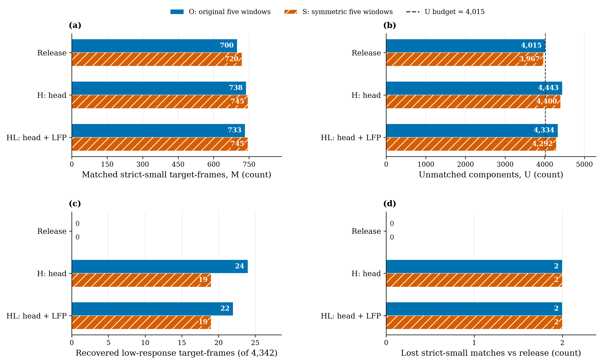
H/HL均为seed46、2048步固定终点。S安排两组M均为745，U分别4400/4292，仍超过4015；LFP相对H未增加匹配总数。下方S/T-LFP历史图使用512步，二者不可混为同一实验。

实验结果与真实画面对照
前一轮S/T-LFP结果的可视化：2个开发片段、5,200个严格小目标帧、130条轨迹；阈值固定为 ≥0.5。S-LFP／T-LFP均为 seed 46、512步终点，只有一个seed，没有误差条或显著性主张。O是原五窗安排，S是对称五窗安排；S-LFP是空间模型名称。
严格小目标匹配集合保持不变：O为700、S为720；冻结的4,342个全窗低响应目标帧恢复为0。这些图保留S/T-LFP未通过的结果。非严格小目标仍有检出丢失，见完整报告。
检出与背景组件总数
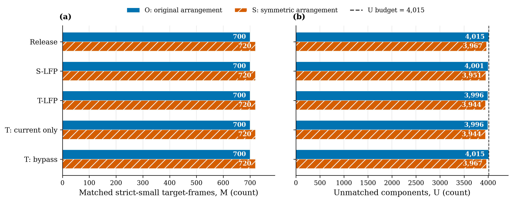
五种配置在两套固定安排下的实际结果。坐标从零起，虚线为 U=4,015 的冻结诊断预算。M 是严格小目标帧匹配数，U 是全部有效标注匹配后剩余的组件数，均不是官方 Pd/Fa。T-current 与 T-bypass 是同一 T 权重的推理控制。

背景成本变化
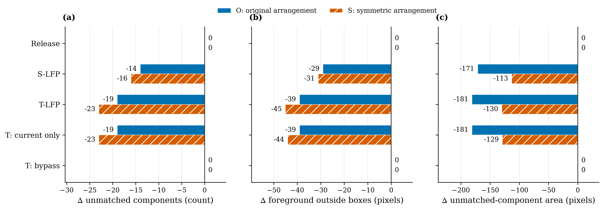
相对同安排发布权重的差值；负值表示该项成本下降。三个面板单位和范围分别标明。O/S 的原基数：U 4,015/3,967，框外像素 38,368/38,641，未匹配面积 45,232/45,136。差值较小，不代表持续漏检已恢复，也不代表全部尺度检出均被保持。

训练过程中的分支变化
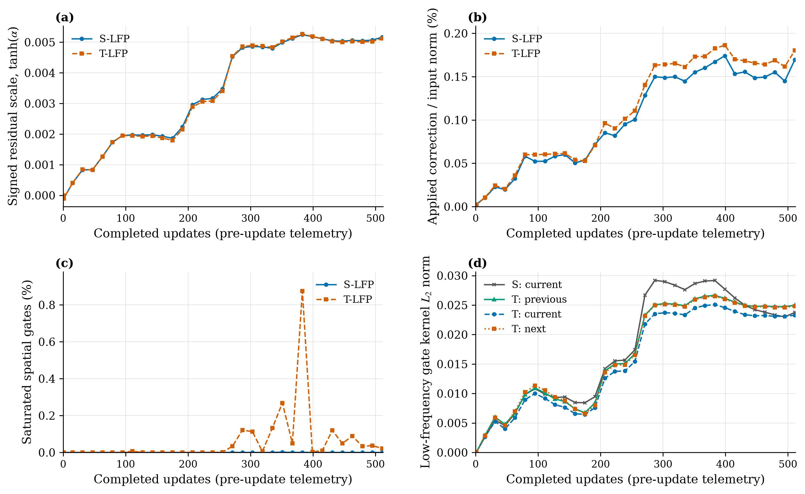
34个已保存日志样点，横坐标是已完成更新数。日志取自该步更新前，最后一点对应511次更新后的状态；不等同于512步终点权重。曲线仅连接真实样点、没有平滑。这是参数与分支变化的遥测，不是检出恢复曲线。

低响应目标局部图
两组局部图按各片段第80帧中“冻结低响应集合的最小轨迹ID”选择。均使用96×96原图裁剪，原图固定0–255显示，概率图共享0–1色标，没有逐图增强。极低响应在此色标下接近黑色；这不证明原输入不存在信息。粗框不代表精确目标形状或中心。0026的目标靠近原画面右边界，保留原位置；图周白边只是绘图区留白，不是补造的图像像素。
DJI_0026_2 · 第 80 帧 · 轨迹 400006
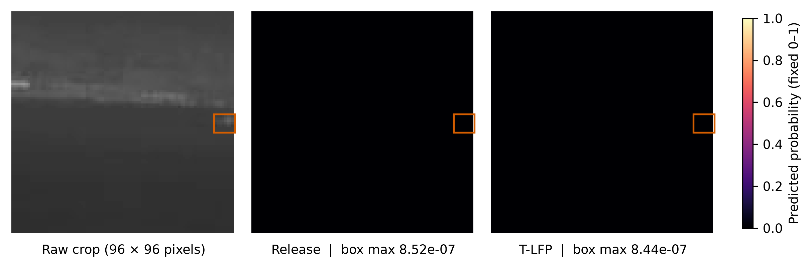
框内最大概率：发布权重 8.521e-07，T-LFP 8.442e-07。两个预测均未恢复该目标；此例不能代表全体目标的物理可见性。

DJI_0067_2 · 第 80 帧 · 轨迹 7700051
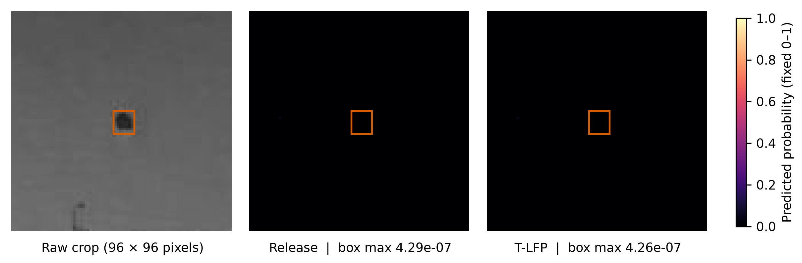
框内最大概率：发布权重 4.290e-07，T-LFP 4.256e-07。两个预测均未恢复该目标；此例不能代表全体目标的物理可见性。

固定帧的完整画面对照
以下整帧只展示O安排。预先固定两个片段的第0、80、159帧，没有按T-LFP输出挑选案例。每组从左到右为原红外图、发布权重、T-LFP；绿色标注框表示实际匹配，橙色标注框表示漏检。彩色框是严格小目标的真实标注框，不是模型预测框；绿色加号为匹配峰。浅蓝轮廓是所有预测前景的0.5等值线，可能对应其他尺度目标，不能直接称为误检。
DJI_0026_2 · 第 0 帧
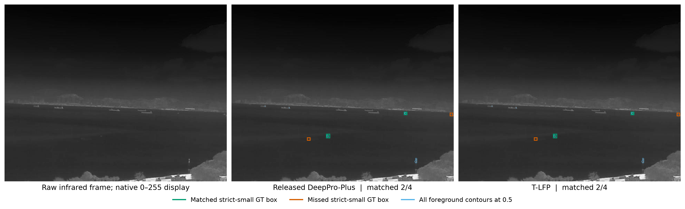
本帧严格小目标 4 个；发布权重匹配 2 个，T-LFP 匹配 2 个。实际匹配直接读取冻结明细表，没有按图上轮廓重新判定。

DJI_0026_2 · 第 80 帧
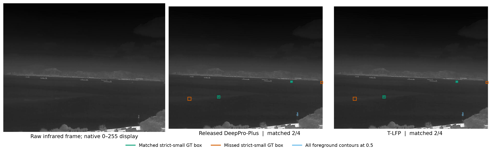
本帧严格小目标 4 个；发布权重匹配 2 个，T-LFP 匹配 2 个。实际匹配直接读取冻结明细表，没有按图上轮廓重新判定。

DJI_0026_2 · 第 159 帧
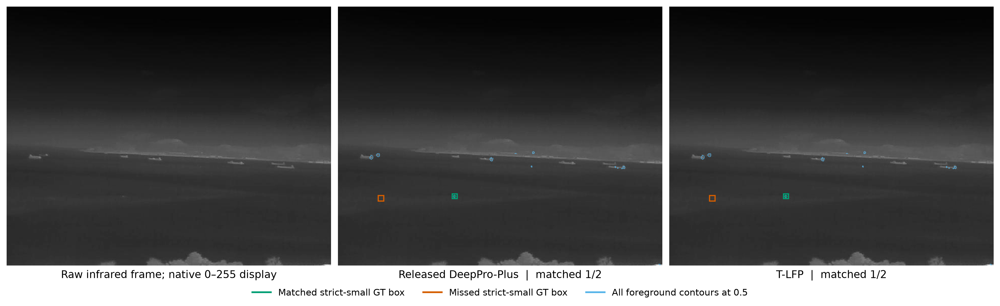
本帧严格小目标 2 个；发布权重匹配 1 个，T-LFP 匹配 1 个。实际匹配直接读取冻结明细表，没有按图上轮廓重新判定。

DJI_0067_2 · 第 0 帧
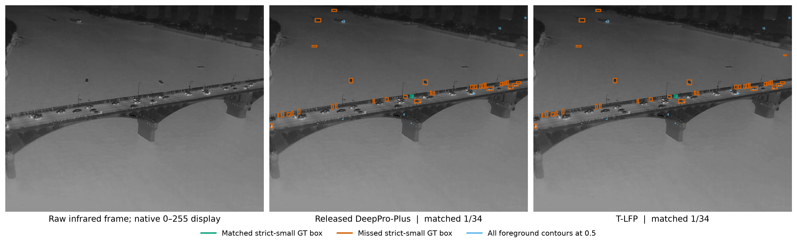
本帧严格小目标 34 个；发布权重匹配 1 个，T-LFP 匹配 1 个。实际匹配直接读取冻结明细表，没有按图上轮廓重新判定。

DJI_0067_2 · 第 80 帧
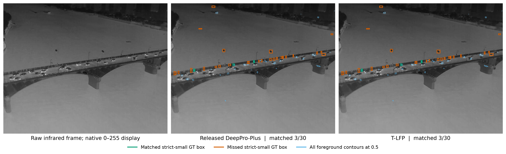
本帧严格小目标 30 个；发布权重匹配 3 个，T-LFP 匹配 3 个。实际匹配直接读取冻结明细表，没有按图上轮廓重新判定。

DJI_0067_2 · 第 159 帧
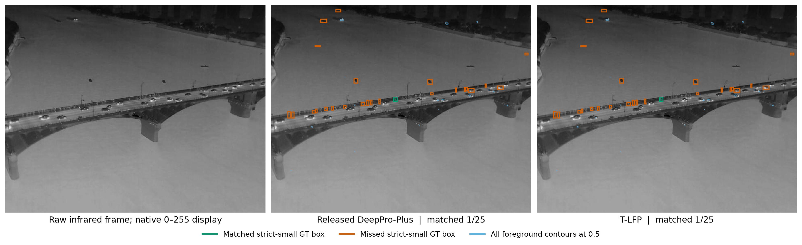
本帧严格小目标 25 个；发布权重匹配 1 个，T-LFP 匹配 1 个。实际匹配直接读取冻结明细表，没有按图上轮廓重新判定。